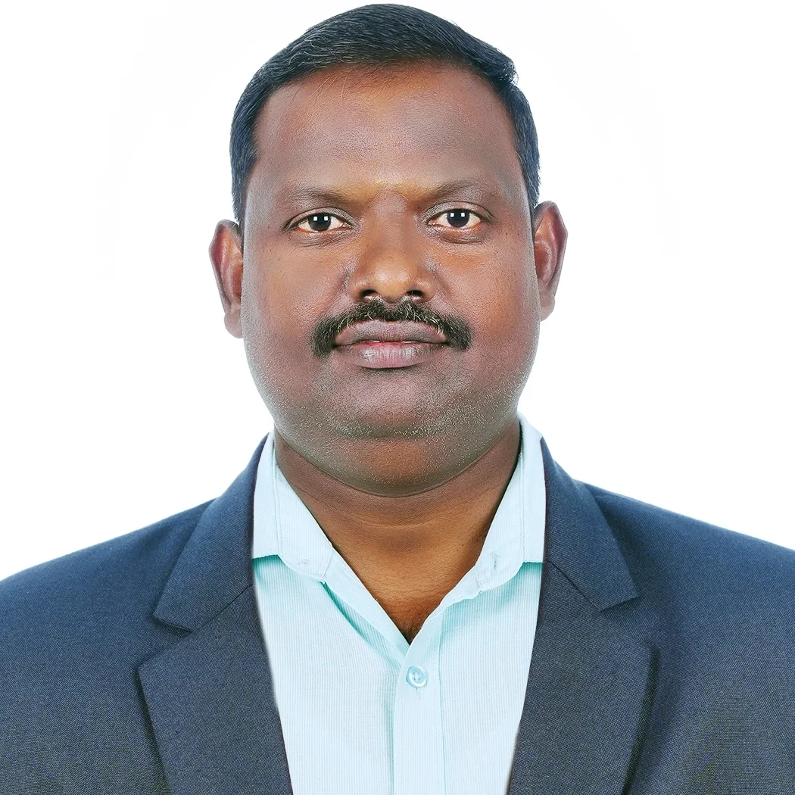

Knowledge • Skill • Success
Knowledge • Skill • Success
The Department of Electrical and Electronics Engineering (EEE) was established in 1994. The department has an annual intake of 60 students. It has been offering quality technical education in the field of Electrical and Electronics Engineering for many years.
Our curriculum is designed to impart both strong foundational theories and intensive practical skills in the laboratories. Students gain comprehensive hands-on operational experience with industry-standard machinery, instruments, and software systems.

HOD
"Welcome to the Department of Electrical and Electronics Engineering. Our department is committed to providing quality education, technical knowledge, and practical skills that will help you succeed in your academic and professional careers. I encourage every student to actively participate in workshops, seminars, projects, internships, and co-curricular activities to enhance their learning experience. Develop a strong foundation in engineering principles, cultivate innovative thinking, and maintain a spirit of continuous learning. With dedication, discipline, and hard work, you can become competent engineers and responsible citizens who contribute positively to society and the nation."